화면 너머 | 윤충근
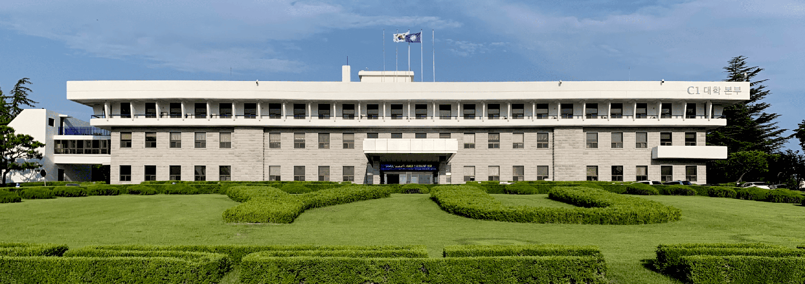
윤충근, 건축 요소, 2024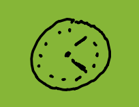
엘리엇 코스트, 일분 공원, 2022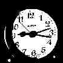
올리아 리알리나, 전쟁에서 돌아온 내 남자친구, 1995- 라파엘 로젠달, 인투타임닷컴, 2013
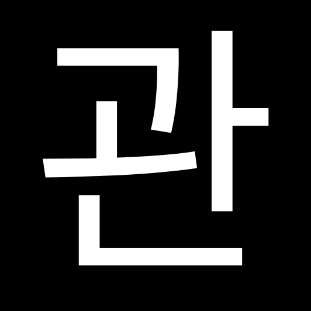
그 후, 국립대체미술관, 2021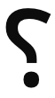
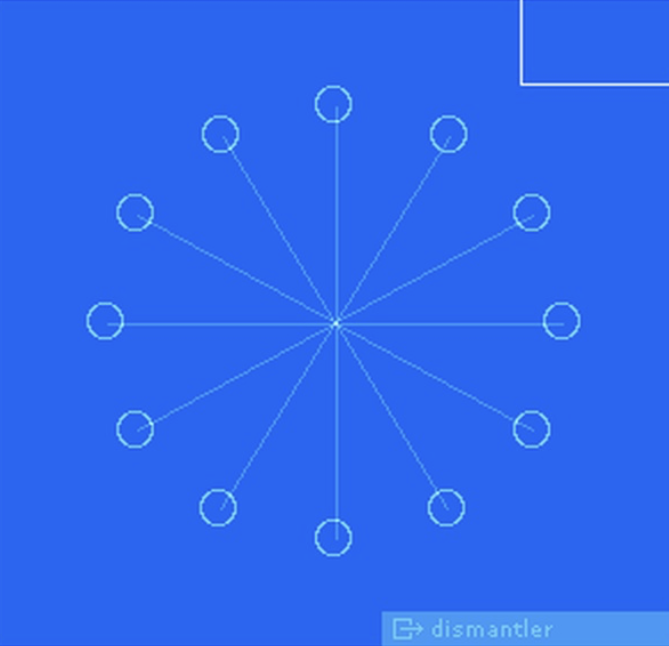
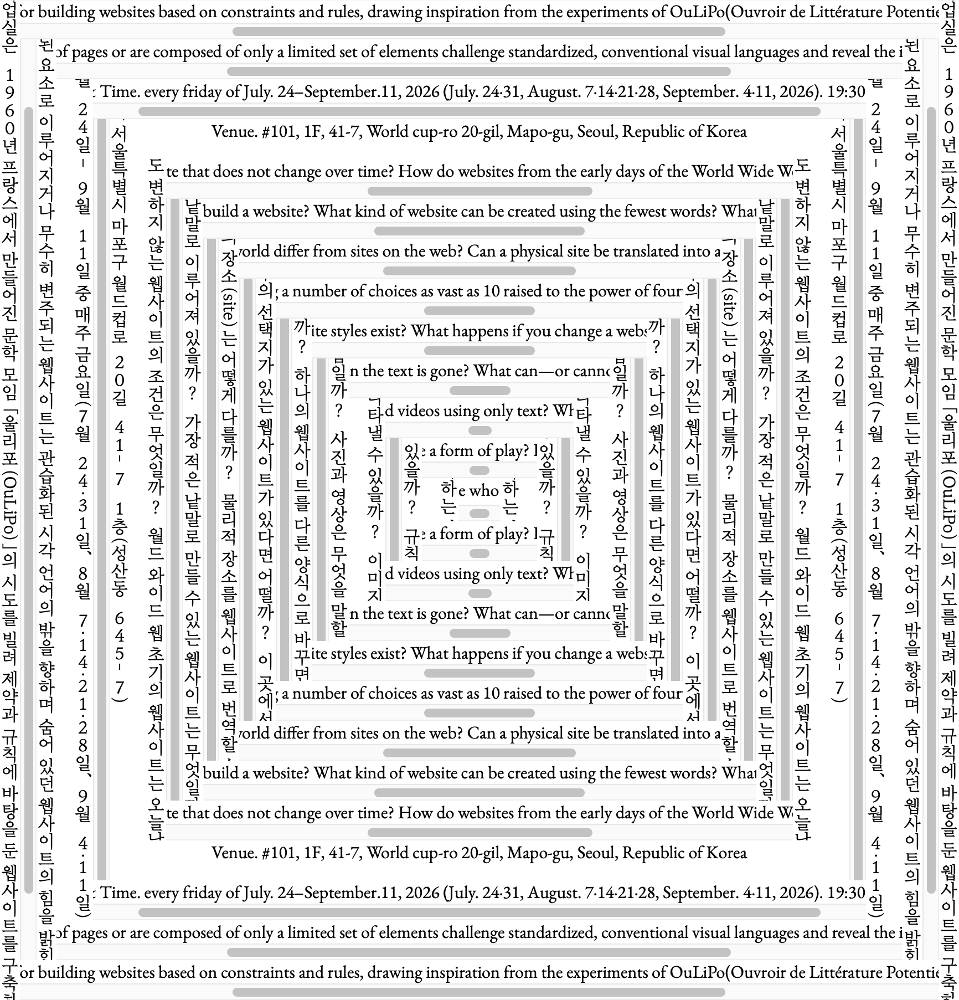
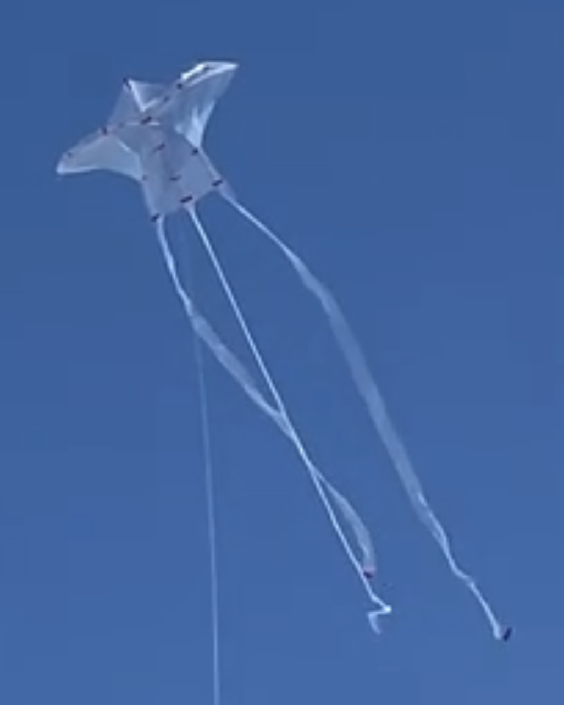
로럴 슐스트, 새 모양 연을 만드는 법, 2021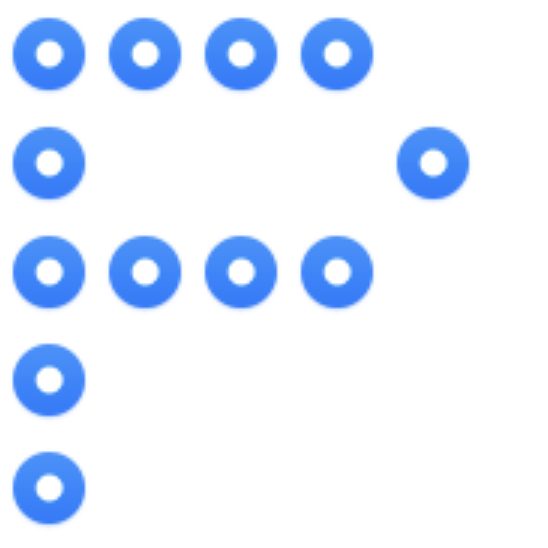
알렉세이 슐긴, 형식 예술, 1992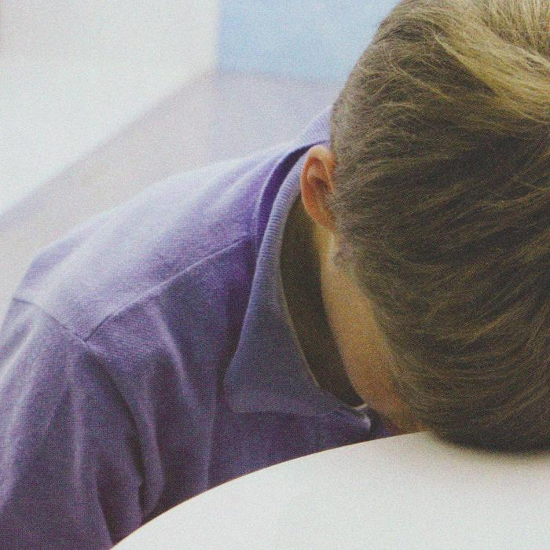
카고, - 샤넌 피네건 코클랏, 시로서의 대체 텍스트, 2021
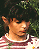
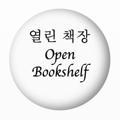
그 후, 젖과 꿀, 2022- 윤충근, 동글 구글 2023
- 팀 버너스 리 경, 인터넷 접근을 인권으로 인정해야 할 때, 2020
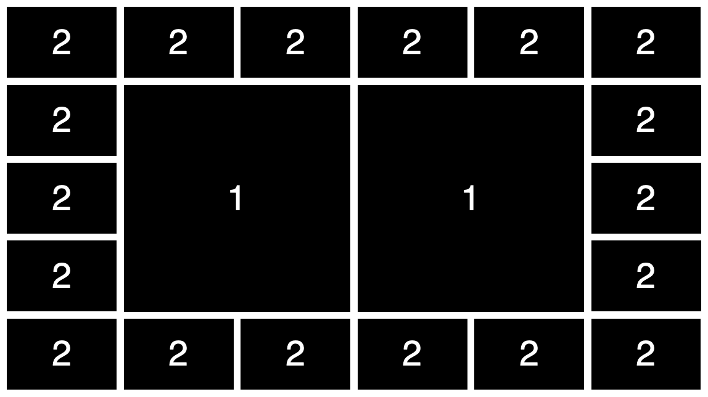
윤충근, 구성, 2021- 그 후, 대체미술관, 2022
- Fig.1
- Fig.2
- Fig.3
- Fig.4
- Fig.5
- Fig.6
- Fig.7
- Fig.8
- Fig.9
- Fig.10
- 코리아 웹 아트 페스티벌, 2001
- 콘스탄트 둘라트, 회전하는 인터넷, 2010
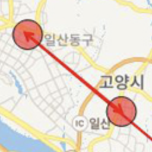
확진자동선지도, 2020